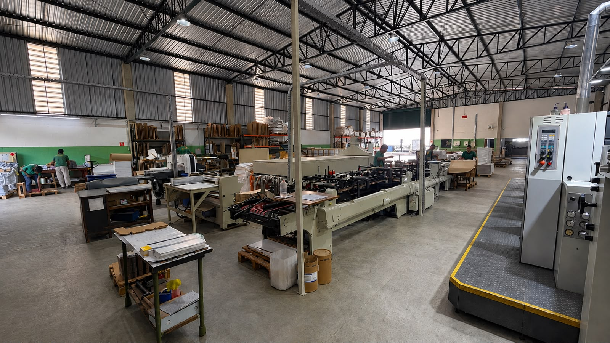
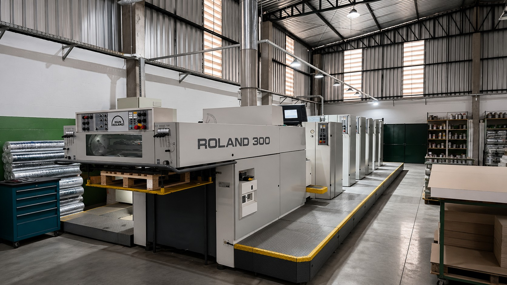
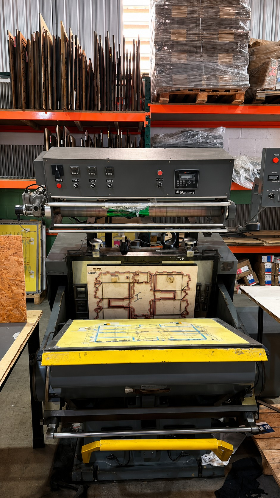
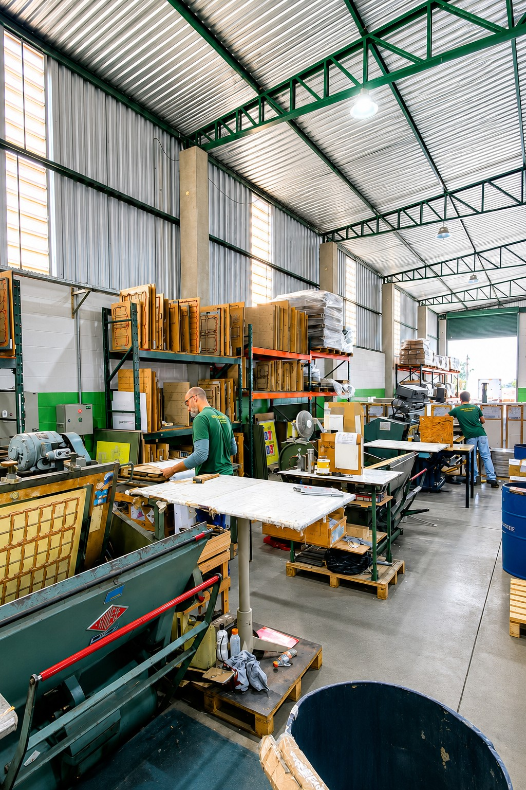
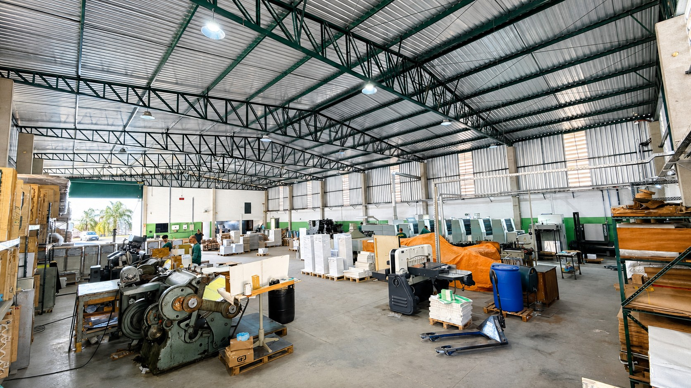
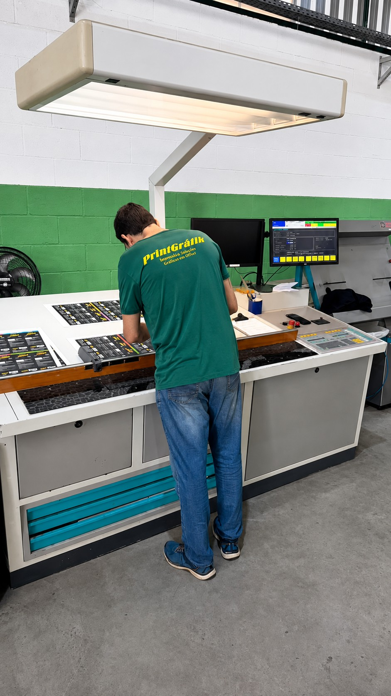
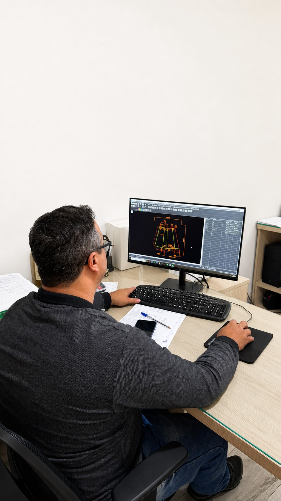
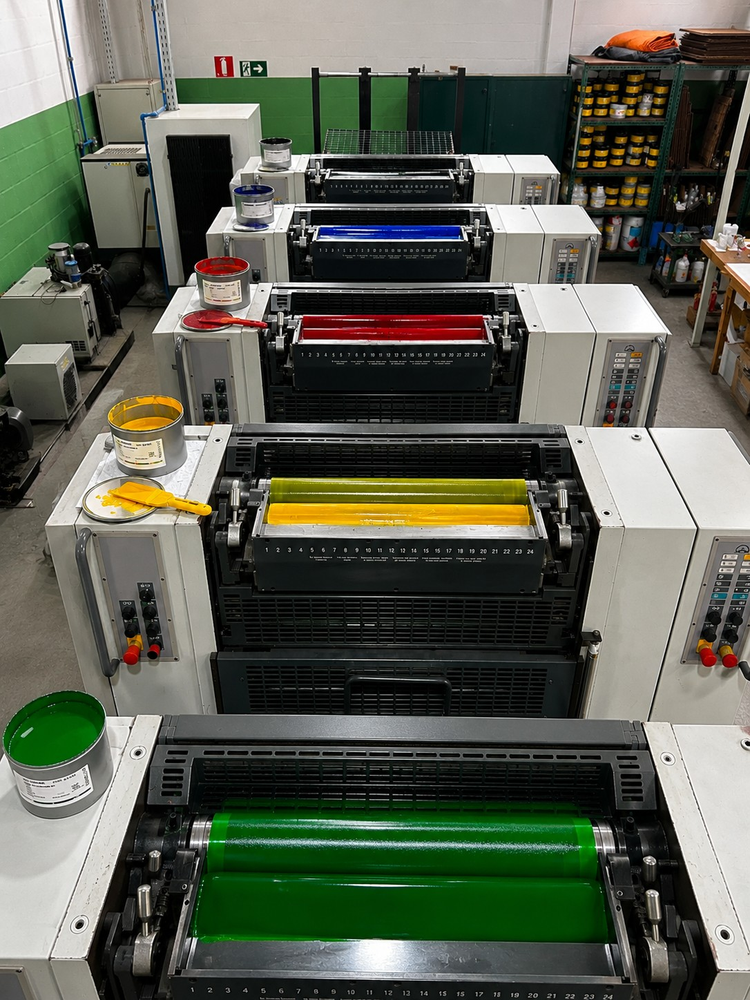
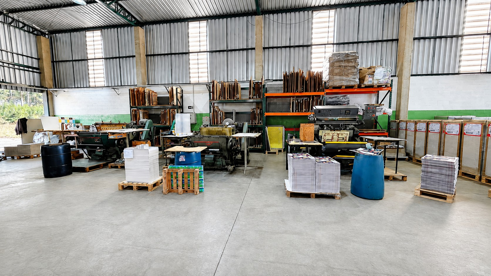
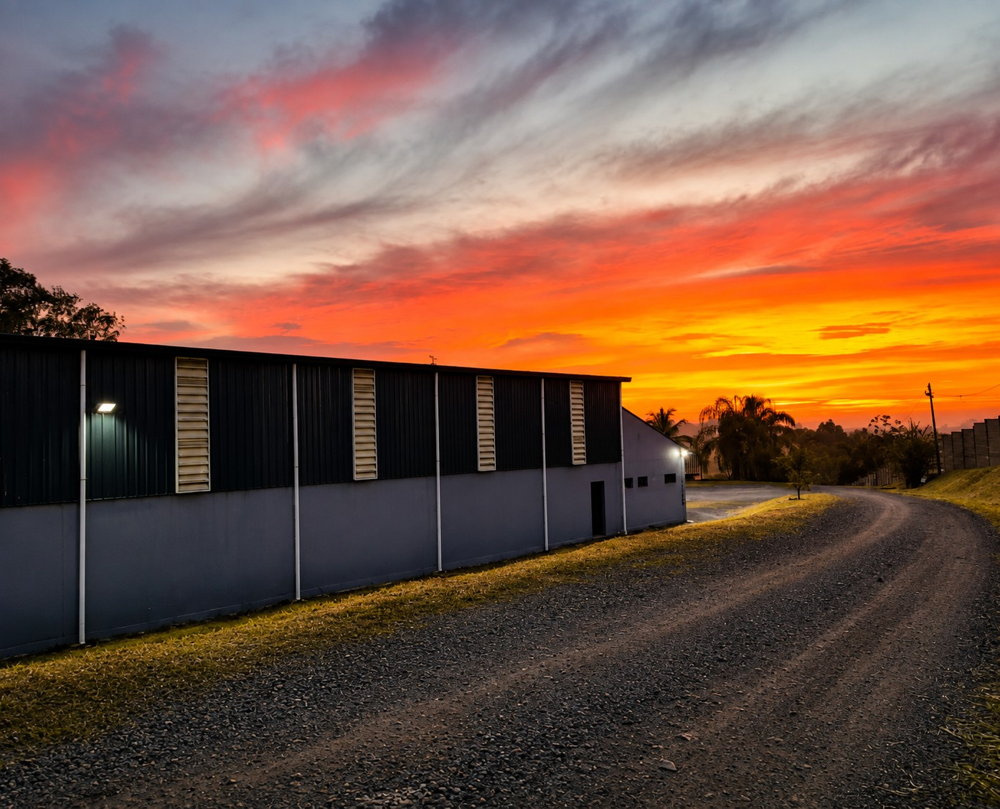

Análise
A equipe recebe as informações sobre o produto, as medidas, a quantidade e o tipo de embalagem desejado.
Estrutura preparada para transformar projetos em embalagens
A PrintGráfik conta com aproximadamente 2.000 m² de área fabril, reunindo equipe, equipamentos e processos voltados à produção de embalagens em papel cartão.

Na PrintGráfik, as principais etapas da produção são acompanhadas internamente por uma equipe com experiência no setor gráfico.
Essa proximidade permite maior controle sobre o trabalho e torna mais simples a realização de ajustes durante o processo.
A equipe recebe as informações sobre o produto, as medidas, a quantidade e o tipo de embalagem desejado.
São avaliados o formato, o material, a arte e os acabamentos necessários para o projeto.
A produção gráfica é realizada conforme as definições e a arte aprovadas pelo cliente.
O material segue para corte, vinco, dobra e demais acabamentos previstos.
As embalagens passam por uma verificação visual antes da finalização do pedido.
Os materiais são organizados e preparados conforme as condições combinadas com o cliente.
A estrutura da PrintGráfik reúne equipamentos destinados às principais etapas da produção gráfica de embalagens.

Utilizada para reproduzir cores, textos e elementos gráficos conforme a arte aprovada.

Etapa responsável por preparar o material nas dimensões definidas para o projeto.

Processos que ajudam a formar a estrutura da embalagem e preparar sua montagem.

Espaço destinado à organização das etapas e ao acompanhamento dos pedidos.
A qualidade de uma embalagem depende do cuidado aplicado durante todo o processo.





Veja registros reais dos espaços, equipamentos e atividades que fazem parte da rotina da PrintGráfik.
Apresente as características do seu projeto e converse diretamente com a equipe da PrintGráfik.